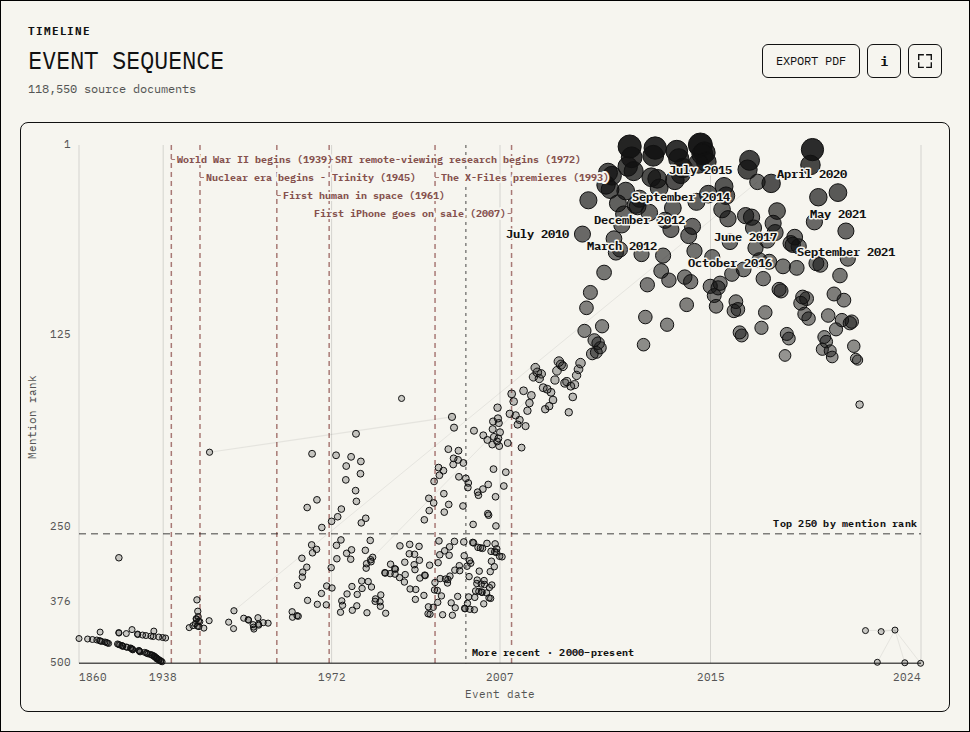
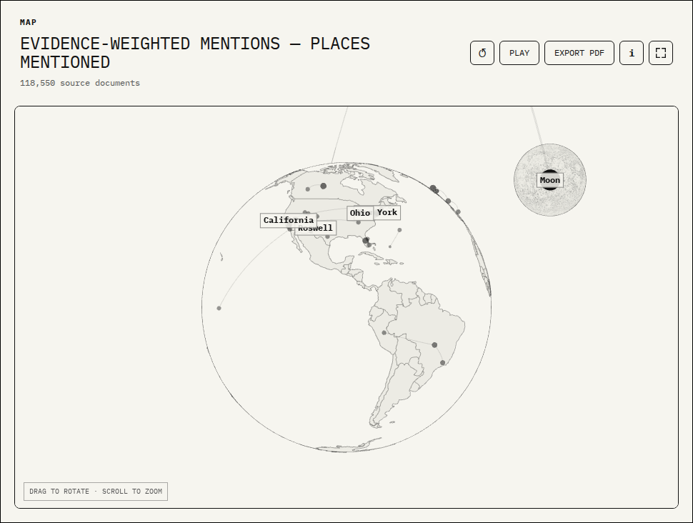
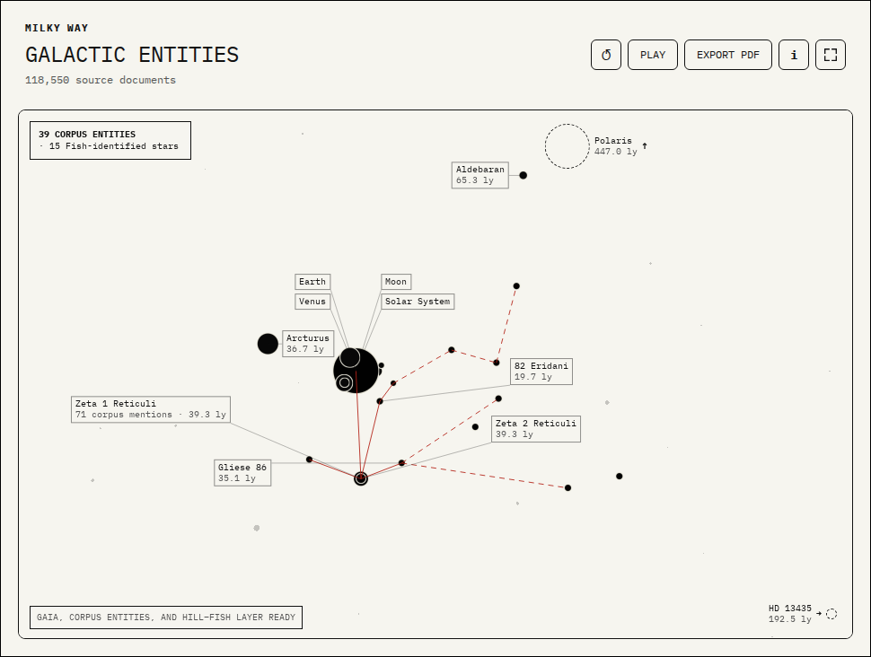
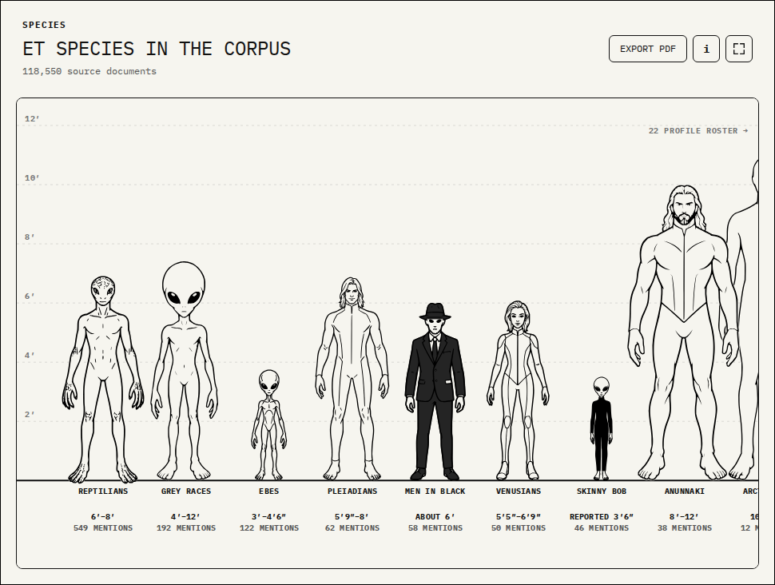
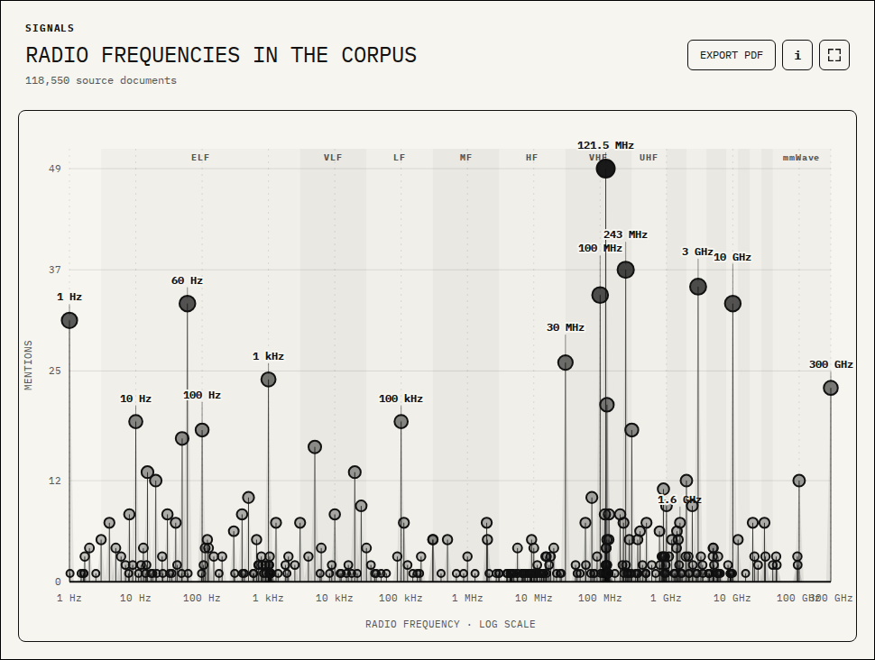
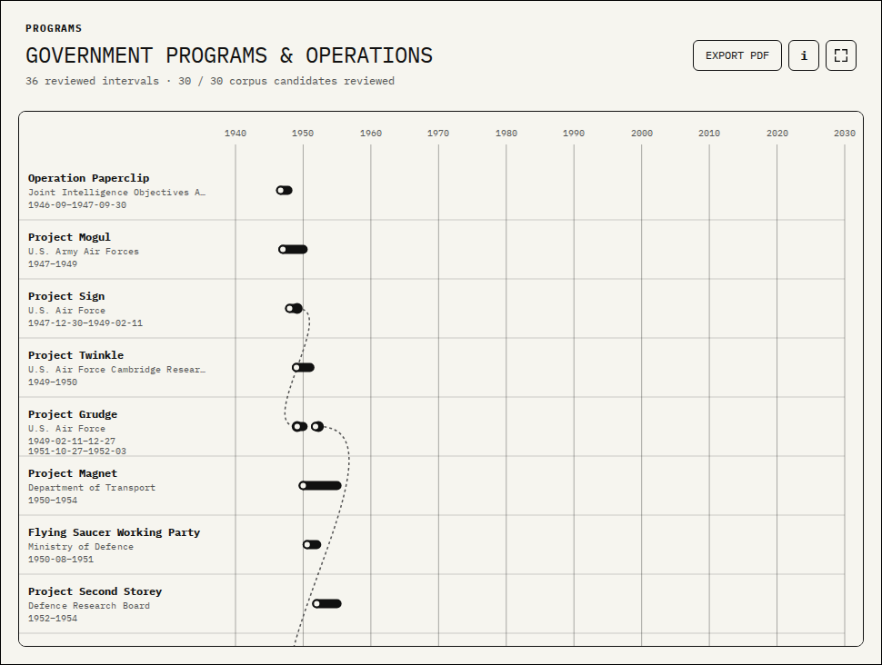

Public records. Open research.
Big Data for
UFO Files Research
Explore patterns and connections across public UFO files. Follow the people, places, and events in the records—and trace what you find back to the source.
Start exploring the dataPublic records are only the beginning. Making them easier to explore helps more people ask questions, follow connections, and examine the evidence.
UFO Files brings those records together with open-source tools for independent research.
Follow the connections.
Timeline
Explore events across time. Follow the chronology of reported encounters and the records connected to them.
Explore timeline
Map
Explore the geography of the records. Find locations mentioned in the collection and investigate the reports associated with them.
Explore map
Galactic Entities
Explore stars, planets, and other astronomical objects referenced in the records. Put their positions and distances in context.
Explore galactic entities
Species
Compare reported beings and species profiles across the collection. Explore their descriptions and the sources behind those accounts.
Explore species
Signals
Explore radio frequencies mentioned in the records. Compare their distribution across the spectrum and follow the source references.
Explore signals
Programs
Explore government programs and operations connected to UFO research. Follow their timelines and the records that document them.
Explore programs
Frequently asked questions

What is UFO Files?
UFO Files is an independent project that makes public UFO records easier to explore through open-source research tools.
Does a connection prove a claim?
No. A connection is a starting point for research. Check the underlying records, their context, and the quality of the evidence before drawing a conclusion.
Where can I find the code and data?
Visit the relationship graph repository for the research tool and the machine data repository for transcripts and derived data.
How can I get in touch?
Send a message through our Hush Line to share feedback or contact the project.